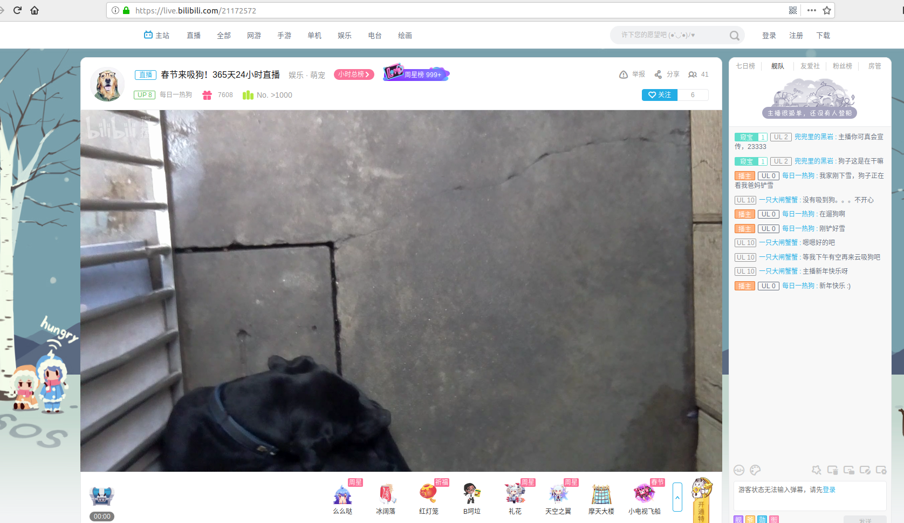

我家养了一条拉布拉多，名字叫小黑，由于我常年不在家，都是我妈妈在养，每当我想要看看狗子，总是需要在我妈妈在家的时候，和我妈妈视频才能看到，因此，就想做一个本文的这个项目。
首先，给大家看下效果，B站直播房间号： https://live.bilibili.com/21172572

项目所需配件
树莓派
树莓派摄像头（选用那种带CSI接口的摄像头，淘宝上最便宜的15RMB, 如果你想晚上也想看到狗子，那么就买个带夜视的，100元不到。千万别买USB摄像头，以树莓派的性能只能达到1080P 10多帧， 画质还惨不忍睹，大多数便宜的USB摄像头(我也买了一个，销量第一的，100多，在树莓派上用简直是垃圾，电脑上用到还可以)都写的1千多万像素，都是软件插值出来的，硬件基本上300万像素。）
系统配置及软件环境
- 系统：
raspbian
用树莓派的应该都会装
- 软件：
ffmpeg
执行sudo apt install ffmpeg，在9102年的现在，仍然能够看到有的教程说要编译安装，以前ffmpeg这个软件因为没在官方的ppa中，所以需要编译安装，但那都是多年前的事情了。建议大家直接apt安装。
命令
1 | raspivid -o - -t 0 -vf -hf -fps 30 -b 6000000 | ffmpeg -re -stream_loop -1 -i "/home/pi/music/human_fall_flat.mp3" -f h264 -i - -vcodec copy -acodec aac -b:a 192k -f flv "你的rtmp地址/你的直播码" |
raspivid -o - -t 0 -vf -hf -fps 30 -b 6000000这个命令是用raspivid从摄像头流中以每秒30帧读取数据，然后通过管道符将视频数据传送给ffmpeg， ffmpeg将视频和音频编码后发送到rtmp服务器。这里需要注意的是rtmp的地址需要加上"
同时推摄像头和麦克风 1
raspivid -o - -t 0 -vf -hf -fps 25 -b 10000000 | ffmpeg -f alsa -ac 2 -i plughw:1,0 -f h264 -i - -vcodec copy -g 50 -strict experimental -f flv "你的rtmp地址/你的直播码"
由于我家的狗是养在院子里面的，晚上是没有灯光的，所以我在某宝上买了一个夜视摄像头，白天切换到日视模式，晚上切换到夜视模式，这样，白天晚上自动切换，很舒服。